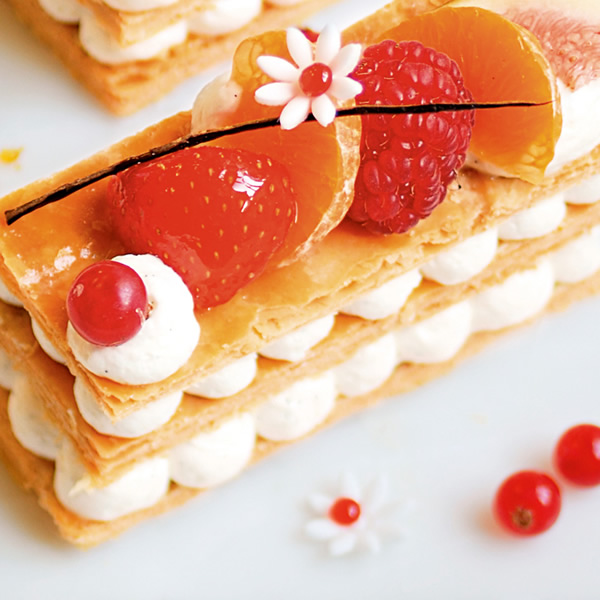

◇ 2019年 最 新 課 程 菜 色 ◇

為了慶祝7月14日法國國慶日，藍帶大師非常高興地與您分享一款法式甜點的經典食譜：拿破侖。 尺寸大小：4人份
腌制大蝦: 開背大蝦，將蝦頭和殼用于肉湯。 混合所有的調料：油、香茅、香菜、大蒜加入蝦中。 尺寸大小：4人份
情人節獨創的甜點食譜：巧克力與咖啡散播的芳香以及百香果的鮮美口感， 兩者的完美結合再加上亮眼的擺飾，讓這道甜點散發著獨特的魅力。 尺寸大小：8人份
如果你喜歡滑順并充滿奶香的冰品，這道冰咖啡舒芙雷一定能滿足你的味蕾。 這在炎熱夏天裏是一道非常適合消暑的完美甜點。此道食譜改編自廚房裏的藍帶 尺寸大小：6人份